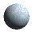

Blizzard III
Materialien
Auf diesen Seiten werden die einzelnen Materialien von Blizzard III vorgestellt. Diese Materialien werden pro Körper in einer Liste verwaltet. Durch geschickte Wahl bestimmter Materialien kann ein Körper so ein komplexes Erscheinungsbild erhalten.
{kind=link}
Normales Material:
 Normales Material besteht aus den drei Farben Ambient, Diffus und Spekulär. Als vier Skalare dienen
die Werte Verspiegelung, Transparenz, Brechungsindex und der spekuläre Exponent.
Normales Material besteht aus den drei Farben Ambient, Diffus und Spekulär. Als vier Skalare dienen
die Werte Verspiegelung, Transparenz, Brechungsindex und der spekuläre Exponent.
Schachbrettmuster:
Zu den Materialeinstellungen, die zum normalen Material gehören wird beim Schachbrettmuster ein
weiteres Material definiert. Das eine symbolisiert das schwarze
Material das
andere das weiße
.
Farbverlauf:
Ähnlich dem Schachbrettmuster sind die Definitionen des Farbverlaufs. Hier werden auch zwei Farben benötigt. Sie markieren Anfang und Ende des Farbverlaufs. Zusätzlich kann zwischen horizontaler und vertikaler Ausrichtung gewählt werden. Eine weitere Möglichkeit besteht darin, ob außerhalb der Grenzen die Farben fortgesetzt werden sollen. Wenn nicht, ist aus Sicht des Farbverlaufs keine Farbe definiert. Damit kann man weitere Materialien in der Liste definieren, die später in der Liste stehen und somit das Aussehen außerhalb des Farbverlaufs definieren.
Marmor:
Marmor wird auf Basis von Perlin-Noise und BSplines erzeugt. Zuerst wird eine Turbulenz abhängig einer Skalierung festgelegt. Die so erzeugten Übergänge werden in eine vordefinierte, zyklische BSpline-Funktion eingespeist, die das Ergebnis glätten. Der dadurch erzeugte Wert wird zum Mischen zweier Farben verwendet, wie sie ähnlicherweise beim Schachbrettmuster verwendet werden.
Granit:
Granit wird nur auf Basis von Perlin-Noise erzeugt. Zuerst wird eine Turbulenz abhängig einer Skalierung festgelegt. Die so erzeugten Übergänge sind aufgrund der fehldenden BSpline-Glättung unruhiger, als beim Marmor. Der dadurch erzeugte Wert wird zum Mischen zweier Farben verwendet, wie sie ähnlicherweise beim Schachbrettmuster verwendet werden.
Holz:
Holz wird durch Perlin-Noise simuliert indem mehrere Werte auf die Geometrie des zugrunde liegenden Körpers genutzt werden.
Newton-Ringe:
 Die Newton-Ringe sind kein Material in eigentlichem Sinne. Sie werden durch einen sog. Shader simuliert und stellen dünne Filme dar. Diese entstehen durch Innenreflexion an durchsichtigen Materialien. Häufig findet man diese Schattierungen bei Ölfilmen und Seifenblasen.
Cook-Torrance:
Das Cook-Torrance-Modell ist kein Material in eigentlichem Sinne. Es ist ein sog. Shader. Dieser hat die Eigenschaft, nicht nur Werte eines Materials zu liefern, sondern diese Werte erst bei der Berechung der Schattierung dazu beizutragen. Das wird benötigt, wenn die Werte vom Einfallswinkel abhängen.
Textur:
Bei der Textur wird die Farbe durch ein Bild definiert. Die Werte Verspiegelung, Transparenz, Brechungsindex und der spekuläre Exponent sing nach wie vor vorhanden. Zusätzlich kan man angeben, wie häufig die Texturen in horizontaler und vertikaler Richtung wiederholt wird. Eine Skalierung ermöglicht eine flexible Größendarstellung und Verteilung auf dem entsprechenden Körper. Außerhalb der Textur ist kein Material vorhanden. Es muß durch weitere Materialeinträge in der Liste definiert werden.